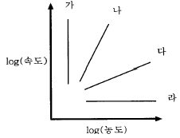
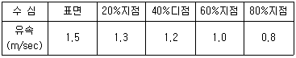
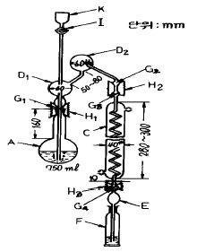
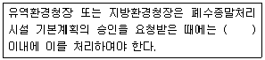
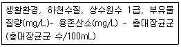
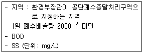

수질환경산업기사 (2003-08-10 기출문제)
1과목: 수질오염개론
1. 물에 대한 다음 기술중 틀린 것은?
- 물은 비열과 잠열이 적다는 특성으로 물의 이용에 있어서 중요한 의미를 갖는다.
- 지구상에서의 물의 대규모 순환은 해양에서 대기로, 대기에서 육상 또는 해상으로, 육지에서 해양으로의 이동이다.
- 물이 고체인 경우 수소결합에 의해 육각형 결정구조를 가진다.
- 생물체의 결빙이 쉽게 일어나지 않음은 물의 융해열이 크기 때문이다.
(정답률: 알수없음)

2. 경도에 관련된 기술중 옳지 않는 것은?
- 경도에는 영구경도인 비탄산경도와 일시경도인 탄산경도가 있다.
- Ca++와 Mg++외에도 Fe++, Mn++, Sr++ 등도 관련된다.
- 영구경도는 끓여서 제거 가능한 경도며 일시경도는 Ca 및 Mg의 염산염, 황산염 등이다.
- 경도의 량은 탄산칼슘으로 환산하여 나타낸다.
(정답률: 알수없음)
3. 수소이온 농도가 7.3 × 10-9 mol/ℓ 일때 pH는?
- 6.14
- 7.14
- 8.14
- 9.14
(정답률: 알수없음)
4. 적조현상의 촉진요인이 아닌 것은?
- 해류의 정체
- 염분농도 증가
- 수온의 상승
- 영양염류 증가
(정답률: 알수없음)
5. 하천에서 오염물 분포 추정을 위하여 정상상태 모델(Steady State Model)을 가장 올바르게 적용한 경우는?
- 갈수기에 오염물이 일정하게 유입되는 경우
- 갈수기에 오염물이 불규칙하게 유입되는 경우
- 풍수기에 오염물이 일정하게 유입되는 경우
- 풍수기에 오염물이 불규칙하게 유입되는 경우
(정답률: 알수없음)
6. 화학반응이 평형에 있을 때 평형의 이동에 영향을 주지 않는 조건은?
- 온도
- 압력
- 농도
- 촉매
(정답률: 알수없음)
7. 다음은 물의 물리적 특성을 나타내는 용어들이다.이중 단위가 잘못된 것은?
- 밀도 - g/㎝3
- 동점성계수 - cm2/sec
- 표면장력 - dyne/㎝2
- 점성계수 - g/㎝· sec
(정답률: 알수없음)
8. 수온이 10℃인 순수물의 포화용존산소량은 대략 얼마정도인가?
- 15 ppm
- 13 ppm
- 11 ppm
- 9 ppm
(정답률: 알수없음)
9. 다음 중 유해물질, 오염발생원과 인간에 미치는 영향에 대하여 틀리게 구성된 것은?
- 구리 - 도금공장, 파이프제조업 - 만성중독시 간경변
- 시안 - 아연제련공장, 인쇄공업 - 파킨씨병 증상
- PCB - 변압기, 콘덴서공장 - 카네미유증
- 비소 - 황산제조, 피혁공업 - 피부흑색(청색)화
(정답률: 알수없음)
10. 먹는 샘물의 개발로 인한 환경피해와 가장 거리가 먼것은?
- 개발지역주위의 지반의 침하
- 개발지역주위의 지하수위의 감소
- 폐공의 관리부실로 인한 지표수의 오염
- 해안지역의 해수유입으로 인한 염도증가
(정답률: 알수없음)
11. 다음 중 부영양화 예측 모델과 가장 거리가 먼 것은?
- Vollenweider 모델
- Dillon 모델
- Larsen & Mercier 모델
- Streeter & Phelps 모델
(정답률: 알수없음)
12. 0.3N의 BaCl2. 2H2O(분자량=244.4) 용액 500mℓ 를 만드는 데 필요한 염화바륨의 양(g)은?
- 4.6 g
- 9.2 g
- 18.3 g
- 36.6 g
(정답률: 알수없음)
13. BOD5가 200㎎/ℓ , COD가 400㎎/ℓ 인 경우 생물학적 분해 불가능한 COD(NBD COD: ㎎/ℓ )는? (단, 탈산소계수(상용대수) = 0.1/day)
- 약 108
- 약 157
- 약 181
- 약 193
(정답률: 알수없음)
14. 어떤 물의 수중 용존산소 농도를 10㎎/ℓ 에서 4mg/ℓ 로 낮출 경우 액상으로의 산소이전 속도는? (단, 어떤 물의 포화 용존산소 농도는 12㎎/ℓ 임)
- 2.5배 감소
- 2.5배 증가
- 4.0배 감소
- 4.0배 증가
(정답률: 알수없음)
15. 글루코스(C6H12O6)를 100㎎/ℓ 함유하고 있는 시료용액의 총유기 탄소의 이론치는?
- 20 ㎎/ℓ
- 30 ㎎/ℓ
- 40 ㎎/ℓ
- 50 ㎎/ℓ
(정답률: 알수없음)
16. SOD(sediment oxygen demand)의 수치가 가장 낮은 것은?
- 하구뻘
- 모래하상
- 도시하수 유입구
- 섬유소질 슬러지
(정답률: 알수없음)
17. 일반적으로 사용되는 조류(Algae)의 경험적 분자식은?
- C5H7O2N
- C5H8O2N
- C10H17O6N
- C7H14O3N
(정답률: 알수없음)
18. PbSO4(MW=303.3)의 용해도는 0.038g/L이다. PbSO4의 용해도적 상수(Ksp)는?
- 약 6.3× 10-8
- 약 3.2× 10-8
- 약 1.6× 10-8
- 약 0.8× 10-8
(정답률: 알수없음)
19. 다음 그래프는 어떤 시간에서의 반응물의 농도에 대한 반응속도를 양 대수지에 표시한 것이다. 그래프에서 0차 반응에 해당되는 것은?

- 가
- 나
- 다
- 라
(정답률: 알수없음)
20. 세포벽의 형태가 박테리아와 유사하며, 섬유상이나 군락 상의 단세포로 편모가 없으며, 엽록소가 엽록체 내부에 있지 않고 세포전체에 퍼져있는 원핵생물은?
- 남조류
- 녹조류
- 규조류
- 유글레나류
(정답률: 알수없음)
2과목: 수질오염방지기술
21. 폐수의 고도처리에 관한 기술 중 잘못된 것은?
- A/O프로세스는 폐수 중 인성분을 생물학적 원리를 이용하여 제거함을 주목적으로 한다.
- 고도처리법은 재래식 2차처리에서 완전히 제거되기 어려운 성분을 다시 제거하는 방법이다.
- 모래여과법은 고도처리에서 흡착법이나 투석법의 전처리로서 중요하다.
- 폐수중의 질소화합물은 철염에 의한 응집침전으로 대부분 제거된다.
(정답률: 알수없음)
22. 도금폐수(鍍金廢水)중의 CN을 알카리 조건하에서 산화하는데 사용되는 약제(藥劑)로 가장 적절한 것은?
- 염화나트륨
- 소석회
- 아황산제이철
- 차아염소산나트륨
(정답률: 알수없음)
23. 다음 중 회전원판법에 관한 설명과 거리가 먼 것은?
- 질산화가 가능하다.
- 슬러지의 반송율은 표준활성슬러지법보다 적다.
- 활성슬러지법에 비해 처리수의 투명도가 나쁘다.
- 단회로 현상의 제어가 쉽다.
(정답률: 알수없음)
24. 다음 보기와 같은 물질들이 폐수내에 혼합되어 있을 경우 양이온 교환 수지로 처리시 일반적으로 제일 먼저 제거되는 것은?
- Ca++
- Mg++
- Na+
- H+
(정답률: 알수없음)
25. 혐기성 공법 중 혐기성 유동상의 단점이 아닌 것은?
- 유출수 재순환의 필요로 공정이 복잡하다.
- 매질의 가격이 비싸다.
- 편류발생을 방지하기 위해 유입수 분산장치가 필요하다.
- 매질의 첨가나 제거가 어렵다.
(정답률: 알수없음)
26. 미생물의 고정화를 위한 팰렛(Pellet)재료로서 이상적인 요구조건에 해당되지 않는 것은?
- 기질, 산소의 투과성이 양호한 것
- 압축강도가 높을 것
- 암모니아 분배계수가 낮을 것
- 고정화시 활성수율과 배양후의 활성이 높을 것
(정답률: 알수없음)
27. 크롬처리 방법에 대한 설명 중 옳은 것은?
- Cr+6는 Cr+3로 환원한 후 알칼리를 주입하여 수산화물로 침전시킨다.
- 반응이 진행함에 따라 폐수의 색깔이 청록색에서 황색으로 변화한다.
- Cr+6은 산화력이 강하기 때문에 강염기성 양이온교환 수지를 사용하여 제거한다.
- Cr+666은 황산을 가해 산화시킨후 다시 중화과정을 거쳐 응집침전시킨다.
(정답률: 알수없음)
28. 어느 하수 처리장의 포기조 용적이 800m3, MLSS가 3000mg/ℓ , 그리고 SRT(고형물 체류시간)가 3일 이라면 1일 생산되는 슬러지의 건조중량은?
- 0.8ton
- 1.6ton
- 2.4ton
- 3.2ton
(정답률: 알수없음)
29. 1차 침전지의 침전효율에 가장 큰 영향을 미치는 인자는?
- 침전지 폭
- 침전지 깊이
- 침전지 표면적
- 침전지 부피
(정답률: 알수없음)
30. Zeolite로 미량금속을 제거코자 한다. 제거탑의 단면적이 4m2으로서 선속도(LV)를 90m3/m2/hr로 유지코자 하면 폐수 통과량(廢水通過量)은?
- 4 m3/분
- 6 m3/분
- 9 m3/분
- 12 m3/분
(정답률: 알수없음)
31. 슬러지량이 300m3/day로 유입되는 소화조의 고형물(VS기준) 부하율은 5.5kg/m3/day이다. 슬러지의 고형물(TS)함량은 4%, VS 함유율이 70%일 때 소화조의 용적은? (단, 슬러지 비중은 1.0)
- 1,260 m3
- 1,527 m3
- 1,827 m3
- 8,400 m3
(정답률: 알수없음)
32. 원추형 바닥을 가진 원형의 일차침전지의 직경이 40m, 측벽 깊이가 3m, 원추형바닥의 깊이가 1m인 경우, 하수의 체류시간은? (단, 이 침전지의 처리유량은 18168m3/day 이다. )
- 7.21 시간
- 6.⑤ 시간
- 5.53 시간
- 4.55 시간
(정답률: 알수없음)
33. 염소이온 농도가 500mg/ℓ 이고 BOD가 5000mg/ℓ 인 공장 폐수를 염소이온이 없는 깨끗한 물로 희석한 후 활성슬러지법으로 처리하여 얻은 유출수는 BOD는 30mg/ℓ 이고 염소이온이 20mg/ℓ 이었다. 이 때 BOD 제거율은?
- 99.4%
- 90.0%
- 85.0%
- 80.0%
(정답률: 알수없음)
34. 응집침전 처리수가 100[m3/day]이다. 이처리수를 모래 여과하여 방류한다면 필요한 여과 면적은? (단, 여과속도는 2[m/hr]로 할 경우)
- 1.4m2
- 2.1m2
- 2.9m2
- 5.0m2
(정답률: 알수없음)
35. 폐수처리장 2차침전지에서 슬러지를 자주 제거하지 않을 경우 생기는 현상과 가장 거리가 먼 것은?
- 혐기성 상태가 되어 N2, H2S 등의 가스가 발생하여 냄새가 난다.
- 침전지에서 슬러지가 부상하지 않는다.
- 슬러지 밀도가 높아지며 유출수의 수질은 나빠진다.
- 침전지 수면에 기체 방울이 형성되고 부유물질이 방류수와 함께 유출된다.
(정답률: 알수없음)
36. BOD가 1250mg/L, SS가 15mg/L, 질소분 5mg/L, 인분 55 mg/L인 폐수를 활성슬러지법으로 원활히 처리하기 위해 공급해야 하는 요소의 량(mg/L)은? (단, 요소: CO(NH2)2 , BOD:N:P=100:5:1 )
- 89
- 93
- 112
- 123
(정답률: 알수없음)
37. 염소의 살균 능력에 관한 다음 기술 중 옳지 않은 것은?
- pH가 낮을수록 살균능력이 크다.
- 온도가 높을수록 살균능력이 크다.
- HOCl은 OCl- 보다 살균능력이 크다.
- 알칼리도가 높을수록 살균능력이 크다.
(정답률: 알수없음)
38. 활성슬러지법중 순산소 포기에 대한 특징을 설명한 것이다. 이중 틀린 것은?
- MLSS를 고농도로 유지할 수 있다.
- 반응시간을 늘려 BOD용적부하를 낮출 수 있다.
- 폐활성슬러지량을 감소시킬 수 있다.
- 슬러지 침전 특성을 양호하게 할 수 있다.
(정답률: 알수없음)
39. 탈질소를 위하여 폐수에 일반적으로 첨가하는 약품은?
- 고분자응집제
- 질산
- 소석회
- 메탄올
(정답률: 알수없음)
40. 생물학적 인제거 공정에 관한 설명이다 틀린 것은?
- 인제거를 위한 중요한 미생물에는 Acinetobacter 등이 있다.
- 인제거 미생물이 혐기성 조건하에서 유입폐수내의 휘발성지방산과 반응하여 인을 축적한다.
- Phostrip공정은 주로 인성분을 제거하기 위한 side stream 공정이다.
- A2/O공정은 질소와 인성분을 함께 제거할 수 있다.
(정답률: 알수없음)
3과목: 수질오염공정시험방법
41. 피토우관에 관한 설명으로 틀린 것은?
- 피토우관의 왼쪽관은 유속이 1 인 상태인 부수압을 측정하고 오른쪽관은 정수압을 측정한다.
- 피토우관의 유속은 마노미터에 나타나는 수두차에 의하여 계산한다.
- 피토우관으로 측정할 때는 반드시 일직선상의 관에서 이루어져야 한다.
- 피토우관의 설치장소는 엘보우,티 등 관이 변화하는 지점으로부터 최소한 관지름의 15 - 50배 정도 떨어진 지점이어야 한다.
(정답률: 알수없음)
42. 휘발성 저급 탄화수소류 분석을 위해 가스크로마토그래프를 적용할 때 사용되는 가장 적합한 검출기는?
- 전자포획형 검출기
- 염광광도형 검출기
- 열전도도 검출기
- 알카리열 이온화 검출기
(정답률: 알수없음)
43. 다음은 흡광광도법에 의한 유해물질 측정에서 항목에 따른 추출제이다. 옳지 않은 것은?
- 구리 - 초산부틸
- 카드뮴 - 사염화탄소
- 비소 - 벤젠
- 페놀 - 클로로포름
(정답률: 알수없음)
44. 수심이 0.6m, 폭이 2m인 하천의 유량을 구하기 위해 수심각 부분의 유속을 측정한 결과가 다음과 같다. 하천의 유량(m3/sec)은? (단, 하천은 장방형이라 가정한다.)

- 1.⑤
- 1.26
- 2.44
- 3.52
(정답률: 알수없음)
45. 다음 항목중 시료용기를 유리제로만 사용하여야 하는 것은?
- 불소
- 페놀류
- 음이온계면활성제
- 대장균군
(정답률: 알수없음)
46. 공정시험방법에서 정의한 용어의 설명중 잘못된 것은?
- 표준온도란 0℃를 말하고, 온수는 60-70℃, 냉수는 15 ℃ 이하를 말한다.
- 0.001㎎/ℓ 와 0.001㎍/㎖는 같다.
- 항량이란 30분 더 건조하거나 강열할 때 전후 무게의 차가 g당 0.3㎎ 이하를 말한다.
- 시험에 사용하는 물은 정제수 또는 탈염수를 말한다.
(정답률: 알수없음)
47. 시약 또는 시액을 취급 또는 저장하는 동안에 기체 또는 미생물이 침입하지 아니하도록 내용물을 보호하는 용기를 무엇이라 하는가?
- 밀폐용기
- 기밀용기
- 차광용기
- 밀봉용기
(정답률: 알수없음)
48. 전처리법 중 유기물을 다량 함유하고 있으면서 산화분해가 어려운 시료에 적용되는 것은?
- 질산 - 황산법
- 질산 - 과염소산법
- 알칼리 용융법
- 회화법
(정답률: 알수없음)
49. 유도결합 플라스마 발광분석장치의 시료와 혼합 표준액을 측정한 후 정량측정방법이 아닌 것은?
- 검량선법
- 내표준법
- 넓이백분율법
- 표준첨가법
(정답률: 알수없음)
50. 시료를 보존하기 위한 다음 설명 중 옳지 않은 것은?
- 페놀류를 함유한 시료는 인산으로 약 pH4로 조절하고 시료 1ℓ 에 대하여 황산구리 1g을 넣어 녹이고 4℃에 보존한다.
- 부유물질을 함유하는 시료는 염산(1+4)을 넣어 pH4 이하로 한 후 마개를 하여 보존한다.
- 6가크롬을 함유하는 시료는 4℃에서 보존한다.
- 시안을 함유하는 시료는 NaOH용액으로 pH12 이상으로 조절하여 4℃에 보전한다.
(정답률: 알수없음)
51. 생물화학적 산소요구량의 예상치에 대한 사전 경험이 없을 때 강한 공장 폐수는 통상 얼마 정도를 희석하여 검액을 조제하는가?
- 0.1 - 1.0 %
- 1.0 - 5%
- 5.0 - 25%
- 25 - 50%
(정답률: 알수없음)
52. 수질오염공정시험방법에서 색도를 측정할 때의 설명이 잘못된 것은?
- 아담스 - 니컬슨의 색도공식에 의거한다.
- 백금 - 코발트 표준물질과 아주 다른 색상의 폐.하수에는 적용이 어렵다.
- 투과율법으로 색도시험을 한다.
- 시료중 부유물질은 제거하여야 한다.
(정답률: 알수없음)
53. 납(Pb)의 정량방법 중 Dithizone법에 의한 흡광광도법에 사용되는 시약이 아닌 것은?
- 염산히드록실아민
- 구연산 2암모늄
- 황화나트륨
- 디티존 4염화탄소
(정답률: 알수없음)
54. 노말헥산추출물질 분석실험의 정량범위와 표준편차율은?
- 2 - 200mg, 20 - 5%
- 3 - 300mg, 15 - 5%
- 4 - 400mg, 10 - 5%
- 5 - 500mg, 5 - 2%
(정답률: 알수없음)
55. 염소이온 측정방법인 질산은 적정법에서 종말점은?
- 엷은 백색 침전이 나타날 때
- 엷은 황록색 침전이 나타날 때
- 엷은 적황색 침전이 나타날 때
- 엷은 황갈색 침전이 나타날 때
(정답률: 알수없음)
56. 다음의 그림은 어떤 항목을 측정할 때 사용하는 증류장치로 가장 알맞는가?

- 수은
- 망간
- 시안
- 유기인
(정답률: 알수없음)
57. 수질오염공정시험방법상 불소 측정방법으로 가장 적절한 것은?
- 흡광광도법 - 가스크로마토그래피법
- 흡광광도법 - 원자흡광광도법
- 흡광광도법 - 이온전극법
- 흡광광도법 - 유도결합플라스마 발광광도법
(정답률: 알수없음)
58. 폐수중의 부유 물질을 측정하고자 실험을 하여 다음과 같은 결과를 얻었다. 폐수중의 부유물질 양은 ? ([결과] 시료량: 100mL, 유리섬유 여지의 무게: 0.6329g, 폐수 여과후 건조여지의 무게: 0.6531g)
- 202㎎/L
- 221㎎/L
- 231㎎/L
- 241㎎/L
(정답률: 알수없음)
59. 각 시험항목의 제반시험 조작은 따로 규정이 없는한 다음 어떤 온도에서 실시하는가?
- 상온
- 실온
- 표준온도
- 항온
(정답률: 알수없음)
60. 100℃에 있어서 과망간산칼륨법에 의해 COD를 측정할 때 염소 이온의 방해를 제거하기 위해 첨가할 수있는 시약과 가장 거리가 먼 것은?
- 황산은 분말
- 염화은 분말
- 질산은 용액
- 질산은 분말
(정답률: 알수없음)
4과목: 수질환경관계법규
61. 다음 ( )안에 알맞는 내용은?

- 15일
- 30일
- 45일
- 60일
(정답률: 알수없음)
62. 다음 조건의 환경기준으로 적절한 것은?

- 50 이하 - 9.5 이상 - 30 이하
- 50 이하 - 7.5 이상 - 30 이하
- 25 이하 - 9.5 이상 - 50 이하
- 25 이하 - 7.5 이상 - 50 이하
(정답률: 알수없음)
63. 초과부과금 산정기준 중 오염물질 1kg당 부과액이 잘못 짝지어진 것은?
- 유기물질 및 부유물질 - 250원
- 카드뮴 - 500,000원
- 시안, 유기인, 납 - 150,000원
- 6가 크롬, 비소, 수은 - 300,000원
(정답률: 알수없음)
64. 수질환경보전법상 호소에서 수거된 쓰레기의 운반· 처리 의무자는?
- 수면관리자
- 시장· 군수· 구청장
- 지방환경관서의 장
- 환경부장관
(정답률: 알수없음)
65. 수질환경보전법상 용어의 정의 중 잘못 기술된 것은?
- '폐수'라 함은 물에 액체성 또는 고체성의 수질오염 물질이 혼입되어 그대로 사용할 수 없는 물을 말한다
- '수질오염물질'이라 함은 수질오염의 요인이 되는 물질로서 환경부령으로 정하는 것을 말한다.
- '폐수배출시설'이라 함은 수질오염물질을 공유 및 사유수역에 배출하는 시설물· 기계· 기구 기타 물체로서 환경부령으로 정하는 것을 말한다.
- '수질오염방지시설'이라 함은 폐수배출시설로부터 배출되는 수질오염물질을 제거하거나 감소시키는 시설로서 환경부령으로 정하는 것을 말한다.
(정답률: 알수없음)
66. 다음 중 환경부가 정하는 수질오염물질, 특정수질유해물질, 부과금대상오염물질에 모두 해당되는 물질이 아닌것은?
- 수은 및 그 화합물
- 페놀류
- 구리 및 그 화합물
- 폴리크로리네이티드비페닐
(정답률: 알수없음)
67. 배출시설 및 방지시설의 운영기록은 최종 기재한 날부터 얼마동안 보존하여야 하는가?
- 6월
- 1년
- 2년
- 3년
(정답률: 알수없음)
68. 기술요원 및 환경관리인 등의 교육을 실시하는 기관으로 알맞게 짝지어진 것은?
- 환경공무원교육원-환경보전협회
- 국립환경연구원-환경보전협회
- 환경공무원연수원-환경관리공단
- 환경관리공단-환경공무원교육원
(정답률: 알수없음)
69. 사업자가 폐수처리방법이 생물화학적 처리방법인 방지시설의 가동개시 신고를 11월 10일에 한 경우 몇 일이내에 배출시설에서 배출되는 오염물질이 배출허용기준이하로 처리될 수 있도록 운영하여야 하는가?
- 15일
- 30일
- 50일
- 70일
(정답률: 알수없음)
70. 지정호소보전구역안의 관리대상시설과 가장 거리가 먼것은?
- 식품접객시설
- 관광숙박시설
- 가두리식 양식시설
- 위생관리용역시설
(정답률: 알수없음)
71. 조업정지를 부과하여야 하는 경우로서 그 조업정지가 주민의 생활, 국민의 경제 기타 공익에 현저한 지장을 초래할 우려가 있다고 인정되는 경우에 조업정지에 갈음하여 부과하는 것은?
- 과징금
- 배출부과금
- 벌금
- 과태료
(정답률: 알수없음)
72. 다음조건에서 오염물질의 배출허용기준으로 적절한 것은?

- 30 이하 - 30 이하
- 50 이하 - 50 이하
- 80 이하 - 80 이하
- 120 이하 - 120 이하
(정답률: 알수없음)
73. 사업장별 환경관리인의 자격기준에 대한 설명으로 틀린것은?
- 1종사업장에서 1개월간 실제 작업한 날만을 계산하여 17시간 이상 작업한 경우에 수질환경기사 2인 이상을 두어야 한다.
- 공동방지시설에 있어서 폐수배출량이 4종 및 5종사업장의 규모에 해당하는 경우에는 3종에 해당하는 환경관리인을 두어야 한다.
- 폐수종말처리장에 폐수를 유입시켜 처리하는 경우에 1종 사업장은 3종 사업장의 환경관리인을 둘 수 있다
- 연간 90일미만 조업하는 1· 2· 3종 사업장은 4· 5종사업장의 환경관리인을 선임할 수 있다
(정답률: 알수없음)
74. 일일유량의 산정을 위한 측정유량의 단위는?
- L/HR
- L/min
- L/day
- m3/HR
(정답률: 알수없음)
75. 낚시제한구역안에서 낚시행위를 한 자에 대한 벌칙기준으로 적절한 것은?
- 200만원이하의 벌금
- 100만원이하의 벌금
- 100만원이하의 과태료
- 50만원이하의 과태료
(정답률: 알수없음)
76. 사업자가 오염물질을 처리함에 있어 수질오염공법상 희석 하여야만 폐수내의 오염물질의 처리가 가능하다고 인정 받고자 하는 경우가 아닌 것은?
- 폐수의 높은 염분농도로 생물화학적 처리가 어려운 경우
- 폐수의 높은 유기물 농도로 생물화학적 처리가 어려운 경우
- 폐수의 높은 중금속농도로 화학적 처리가 어려운 경우
- 폐수의 폭발의 위험이 있어 원래의 상태로는 화학적 처리가 어려운 경우
(정답률: 알수없음)
77. '과징금 부과실적'의 위임업무보고 횟수로 적절한 것은?
- 수시
- 연 1회
- 연 2회
- 연 4회
(정답률: 알수없음)
78. 시· 도지사 등은 배출시설의 가동개시신고를 수리한 경우에는 시운전기간이 지난후부터 몇 일이내에 배출시설 및 방지시설의 가동상태를 점검하여야 하는가?
- 7
- 10
- 15
- 30
(정답률: 알수없음)
79. 수질오염방지 시설중 생물화학적 처리시설에 해당되지 아니하는 시설은?
- 접촉조
- 산화시설(산화조)
- 안정조
- 살균시설
(정답률: 알수없음)
80. 환경친화기업 지정에 관한 내용으로 맞지 않는 것은?
- 환경부장관은 환경개선에 크게 기여하는 사업장에 대하여 환경친화기업으로 지정할 수 있다.
- 환경친화기업으로 지정받고자 하는 사업자는 환경부령이 정하는 바에 따라 지정신청을 하여야 한다.
- 환경부장관은 환경친화기업으로 지정된 사업장에 대하여 환경부령에 따라 배출시설의 설치 허가를 신고로 대신하게 할 수 있다.
- 환경부장관은 환경친화기업으로 지정된 사업장에 대하여 배출부과금의 감면 또는 보고· 조사의 면제 등의 조치를 취할 수 있다.
(정답률: 알수없음)